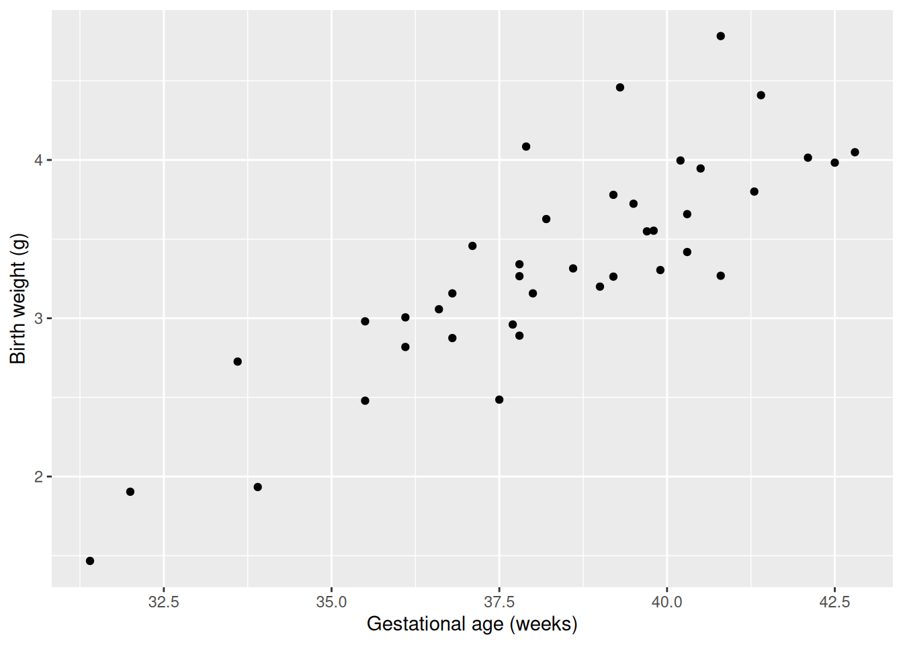

Chapter 5 Simple Linear Regression
5.1 What is regression?
So far, we have looked at simple statistical models, with a single variable of interest. We have estimated the distribution of that variable based on random samples from that one variable. In many real-world problems, we instead want to understand the relationship between multiple variables.
Regression seeks to model how one “output” variable, called the response variable, \(Y\), depends on one or more “input” variables \(x\), which we will call covariates.
The response \(Y\) is sometimes called the dependent variable. The covariates \(x\) are sometimes called independent or explanatory variables.
In MATH1063, we will study only simple regression models, which have a single covariate \(x\).
For instance, suppose we interested in how the birth weight of babies depends on gestational age (in weeks). The response, \(Y\), is birth weight in \(g\). The covariate, \(x\) is gestational age (in weeks). Suppose we have the following data (this data is fictional, but based on real data for male singleton births in Canada).

5.2 Simple linear regression
In simple linear regression, we model the dependence of the response on the covariate as a straight line plus an error term. That is \[Y_i = \beta_0 + \beta_1 x_i + \epsilon_i, \; i = 1, \ldots, n,\] where \(\beta_0\) is an intercept parameter, \(\beta_1\) is a slope parameter and \(\epsilon_i\) is a random error term. We usually model \(\epsilon_i \sim N(0, \sigma^2)\), with variance parameter \(\sigma^2\). There are three unknown parameters, \(\beta_0\), \(\beta_1\) and \(\sigma^2\), which we want to estimate from the data.
We have \[E(Y_i) = \beta_0 + \beta_1 x_i.\] Any choice of \(\beta_0\) and \(\beta_1\) give a different straight line. We call \(\beta_0\) and \(\beta_1\) the regression parameters.
Out of all possible choices of straight line (choices of the regression parameters \(\beta_0\) and \(\beta_1\)), which one should we choose?
5.3 Estimation
To estimate the unknown regression parameters, we attempt to make the associated straight line as close as possible to the data. We measure the distance between the line and the data with the sum of squares criterion:
\[\text{SS}(\beta_0, \beta_1) = \sum_{i=1}^n (y_i - \beta_0 - \beta_1 x_i)^2.\]
We need to find the values of \(\beta = (\beta_0, \beta_1)^T\) which minimises \(SS(\beta)\), that is \[\hat \beta = \arg\min_\beta SS(\beta).\]